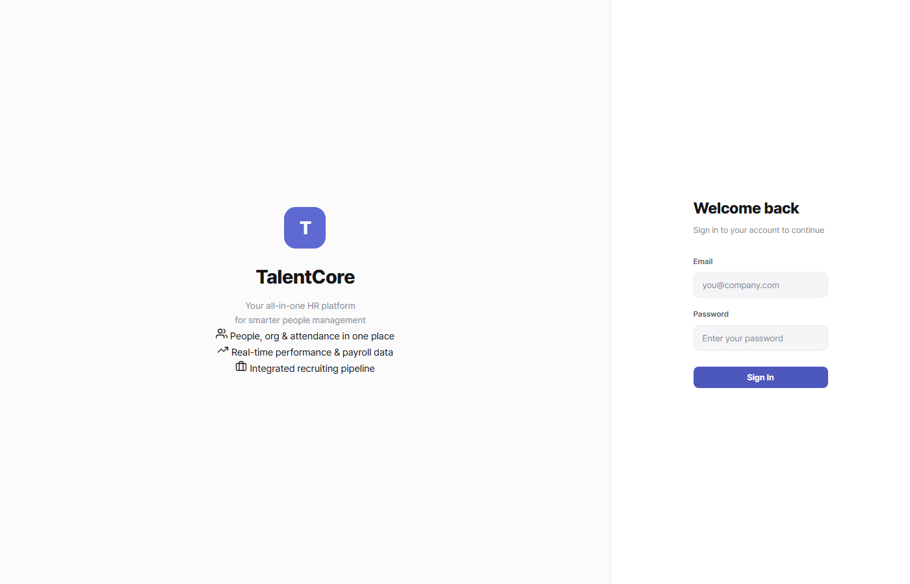

기능 개요
보상 관리 허브는 급여 운영(월 급여 생성·수정), 급여 구조(밴드·Compa-Ratio·Merit Matrix), 성과 연동 급여 검토(캘리브레이션 결과 기반 Merit 인상 반영), 보상 분석을 4개 탭으로 통합합니다.
급여 운영
급여 구조
성과 연동 검토
보상 분석
핵심 프로세스
월 급여 생성 흐름
자동 계산 항목: 기본급, 연장·야간·휴일수당, 식대·교통비 등 비과세, 4대보험(국민연금·건강보험·고용보험·산재), 소득세·지방소득세
성과 연동 Merit 급여 검토 흐름 (3단계)
Compa-Ratio 이해하기
📐 공식
Compa-Ratio = 현재 연봉 / 밴드 중간값 × 100
· 100% 미만: 밴드 하단 위치 (성장 여지 큼)
· 100%: 시장 중간값과 일치
· 100% 초과: 밴드 상단 (Merit 인상 제한)
· 100%: 시장 중간값과 일치
· 100% 초과: 밴드 상단 (Merit 인상 제한)
🎨 색상 배지
↓ 80% 미만밴드 하단
● 80~120%정상 범위
↑ 120% 초과밴드 상단
권한 매트릭스
역할별 사용법
📌 급여명세서 및 복리후생 조회
내 문서 → 급여명세서
월별 급여명세서 열람. 기본급, 수당, 공제 항목 상세 확인 가능
복리후생 조회
내 복리후생 페이지에서 적용 중인 항목과 복지포인트 잔액 확인
총보상 명세서
연간 기본급 + 상여 + 복리후생 + 퇴직금 적립액 합산 명세서 (인쇄 가능)
성과 등급별 보상 배수(Merit 인상률)는 성과 관리 페이지에서 사전 공개됩니다.
📌 월 급여 생성
보상 관리 → 급여 운영 탭
년/월 선택 → 미리보기로 전 직원 예상 급여 확인
확정 생성
미리보기 검토 후 급여 생성 클릭 → 전 직원에게 인앱 알림 자동 발송
개별 수정
특수 수당 등 수동 조정 필요 시 직원별 급여 수정 모달 사용 (변경 사유 기록)
📌 성과 연동 Merit 급여 검토
캘리브레이션 완료 확인
성과 → 캘리브레이션에서 전원 등급 확정 후 보상 검토 시작 버튼 클릭
보상 관리 → 성과 연동 검토 탭
부서·등급 필터로 대상 직원 추려내기. 권고 인상률(Merit Matrix 기반) 자동 표시
선택 후 일괄 반영
반영할 직원 체크박스 선택 → 선택 직원 급여 반영 → salary_history 자동 기록

보상 관리 허브 — 4탭 통합 화면